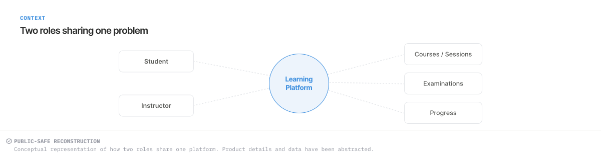
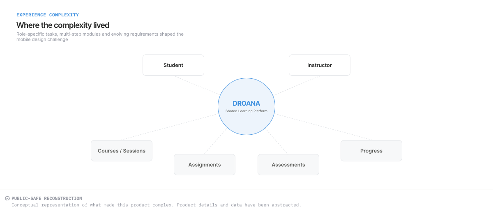
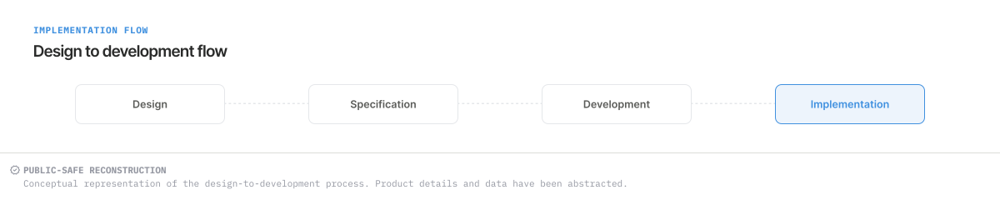

CASE STUDY · MOBILE PRODUCT
Droana Classroom
Translating a complex classroom platform into a mobile experience for instructors and students.
Work undertaken during my employment at Paramatrix Technologies Limited. The interface and diagrams are independently recreated, conceptual portfolio visuals, not original product screenshots or exact production workflows.

01 · CONTEXT
Translating existing web functionality into mobile interfaces.
Droana Classroom is a cloud-based virtual classroom and course-planning platform developed by Paramatrix. Its web functionality covered online teaching, interactive workspaces, scheduling, tests and exams, communication and document management.
The existing website was the functional reference. I translated its workflows into mobile interfaces, adapting information grouping and task sequences for smaller screens.
02 · USERS & SCOPE
Two roles, with clear contribution boundaries.
I explored the existing web platform, studied its workflows, mapped instructor and student flows, and created wireframes for both roles. I personally designed the instructor mobile UI, including the dashboard, profile, notifications, forms, session scheduling and exam/test creation flows.
I created student wireframes. A senior designer initiated final UI on a few student screens, after which continuation work was carried forward. My direct UI design responsibility centred on the instructor experience.


03 · WORKFLOW COMPLEXITY
Each module felt like a small application.
Session scheduling and exam creation each brought their own sequence of inputs and decisions. Instructor and student flows overlapped, but their tasks were distinct. Keeping that structure understandable on a small screen required more than a consistent visual treatment.
Requirements changed during the process, leading to revisions in flows and screens. The design had to accommodate those changes while maintaining continuity across modules.


04 · DESIGN CHALLENGE
Keep complex tasks manageable on a small screen.
The core challenge was to preserve the web platform’s functionality while breaking long, multi-step tasks into a mobile-friendly sequence. A user needed a clear view of the current part of the task without confronting every field and decision at once.
I moved from exploring the website and understanding requirements to role flows, wireframes and mobile UI. I revised flows and screens as requirements changed.
05 · DESIGN DECISIONS
Structure first, then consistency across screens.
Break workflows into steps
I structured complex web tasks as mobile-friendly sequences, particularly for exam creation and session scheduling. The intent was to keep each stage understandable while retaining the required functionality.
Group long forms
I organised longer forms into smaller sections so related inputs could be handled together. The aim was to make each section manageable on a small screen.
Make layouts role-aware
Instructor and student layouts followed their respective tasks. The student reconstruction illustrates this through today’s session and learning shortcuts; the instructor work focused on managing sessions, exams and related inputs.
Read the selected interface ↓Keep modules consistent
I carried related form and interaction patterns across modules, so changes to a workflow could fit the wider mobile experience. These patterns helped keep the modules visually and behaviourally consistent.
06 · SELECTED INTERFACES
A student view of the shared mobile experience.
The Student Dashboard reconstruction illustrates the hierarchy of the student experience. The supporting diagrams show the role structure, workflow complexity and handoff context.
- Immediate activity first: today’s session is placed above broader learning content.
- Separate summaries from navigation: session and exam counts sit above the learning-hub shortcuts.
- Broader exploration follows: recommended courses appear after the immediate tasks and core modules.
The instructor scheduling and exam-creation work is described from my contribution, but is not represented by this student visual.
Return to the complete Student Dashboard ↑07 · DESIGN TO IMPLEMENTATION
Follow the design into the implemented mobile UI.
I shared the designs with developers, who implemented the mobile UI. I then manually checked the APK/UI against the design, comparing the implementation with the intended interface.


08 · REFLECTION
Designing for mobile means restructuring the work.
Translate the task, not the page
Existing web functionality was a starting point. Mobile design required a clearer sequence and more deliberate grouping of information.
Respect the role differences
A shared product needed consistency without forcing instructor and student tasks into the same layout.
Carry structure through change
Changing requirements made reusable interaction patterns and manual implementation review important parts of the design work.